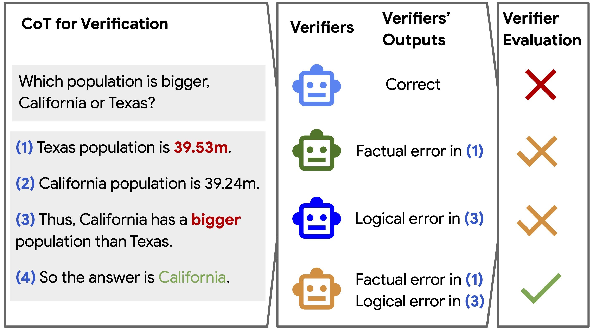
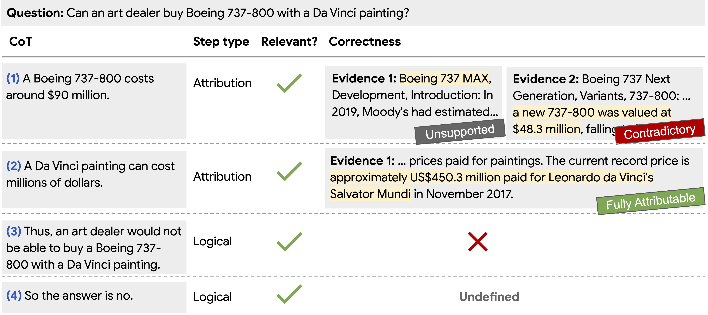
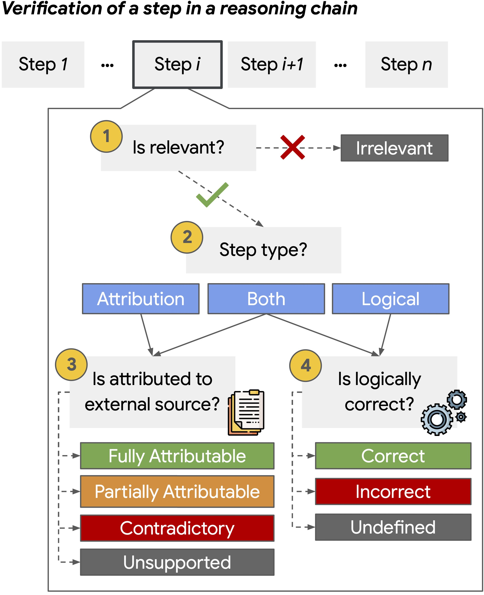
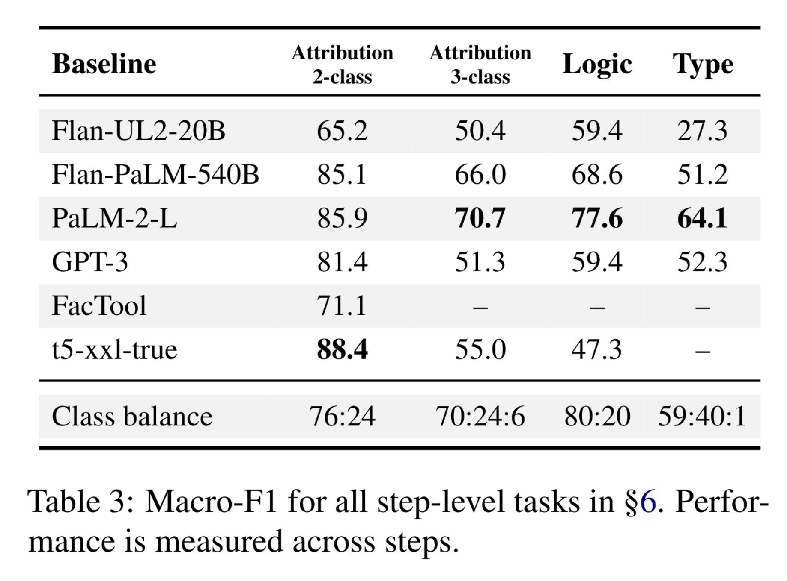
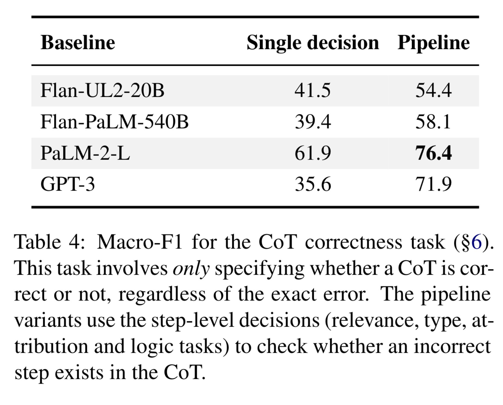
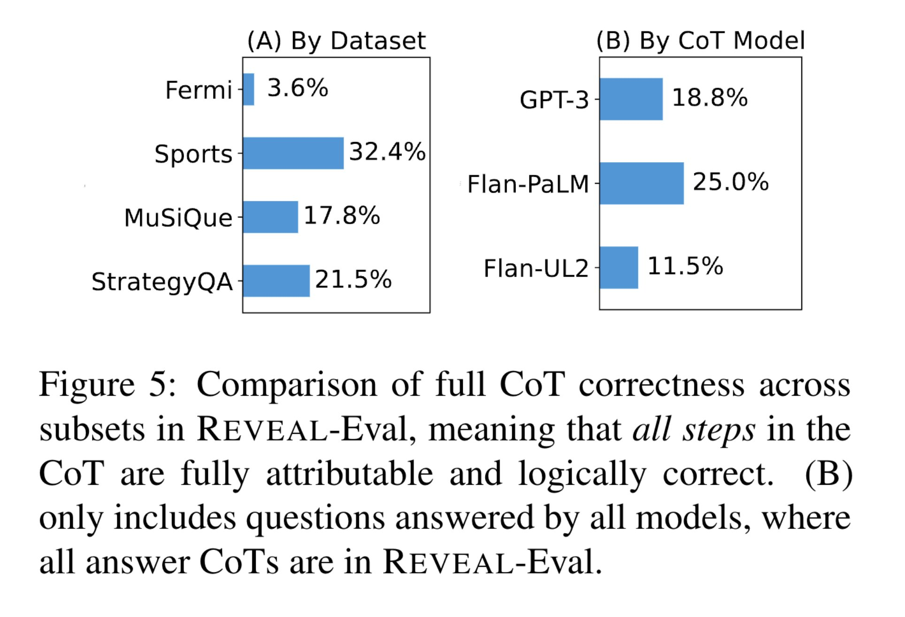
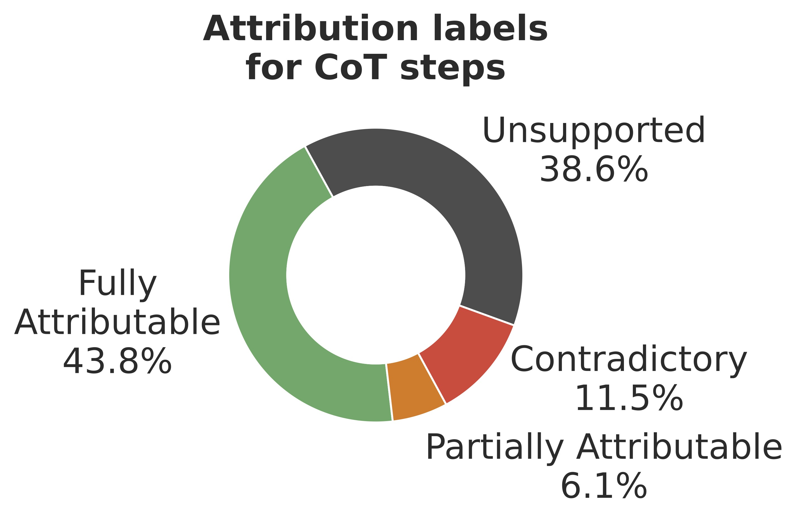

Prompting models to generate reasoning chains is popular and useful, but when checking whether this reasoning is actually correct, it often isn’t. Better reasoning is correlated with better performance on the end task, and can also be useful in itself.
Recent works introduced verification methods for reasoning chains, but how good are these verifiers? To answer this question, we introduce REVEAL, a human-labeled benchmark for verifiers of reasoning chains.
Each reasoning chain in REVEAL was annotated step-by-step, marking for every step its type, relevance and correctness: Either attribution to an evidence passage or logical inference from previous steps.

We collected the dataset by separating the reasoning chains into steps, labeling the step type (attribution or logic) and relevance, and depending on the step type, labeling its correctness. For attribution, we retrieve Wikipedia paragraphs to attribute the step, and for logic, we check whether the step is logically entailed by the previous steps.

Interestingly, while LMs are decent at making simple logical inferences, they are bad at making attributable claims (77% attribution errors vs. 18% logic errors). *Verifiers* of reasoning, however, are better at checking attribution than logical correctness.

Verifiers improve if you structure the prediction into predicting specific errors in each step separately (“Pipeline” in the table), but there’s still a lot of headroom.

The actual percentage of correct reasoning in REVEAL is around 20% (i.e., the LMs we tested gave fully correct CoTs 20% of the time). The entailment of knowledge claims is generally low (43.8%). Even if the models are correct at their final answer, the chance that their given reasoning is correct is not high.


Check the paper for a lot more details and analyses, for example: The challenges of collecting this kind of data, including a deep dive analysis of disagreements and borderline cases. We release all of the hard borderline cases as a separate data split.
@misc{jacovi2024chainofthought,
title={A Chain-of-Thought Is as Strong as Its Weakest Link: {A} Benchmark for Verifiers of Reasoning Chains},
author={Alon Jacovi and Yonatan Bitton and Bernd Bohnet and Jonathan Herzig and Or Honovich and Michael Tseng and Michael Collins and Roee Aharoni and Mor Geva},
year={2024},
eprint={2402.00559},
archivePrefix={arXiv},
primaryClass={cs.CL}
}